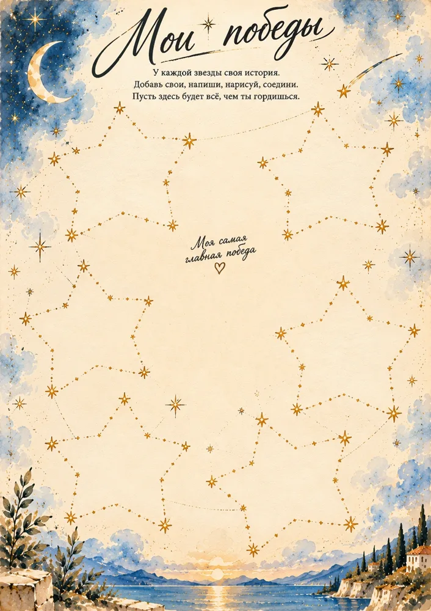
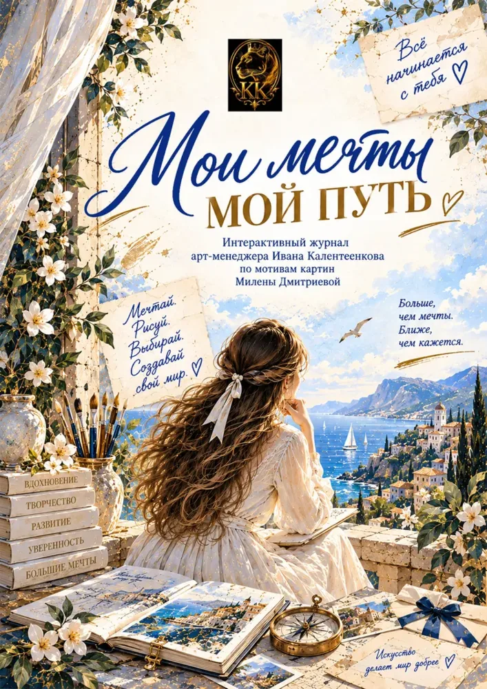
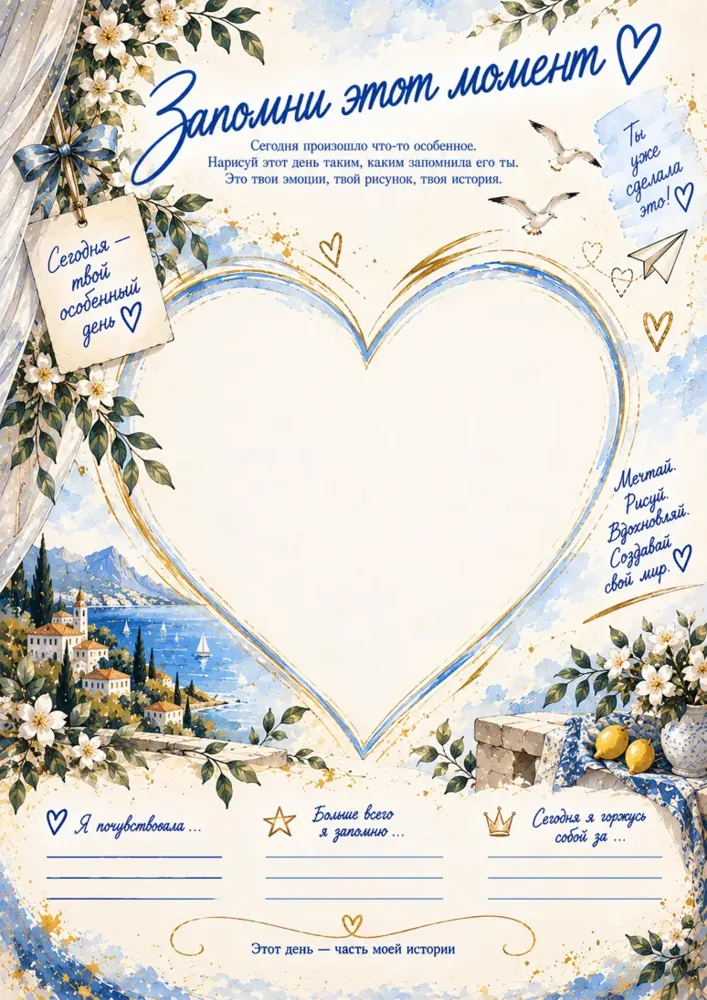

Мой путь
О себе, воспоминаниях и мечтах · 20 страниц
Соберём фотографии, воспоминания и важные слова в авторский журнал — подарок, к которому захочется возвращаться.
От первой идеи до согласованного макета и печати.

Вот как могут выглядеть страницы. Полистайте существующие авторские издания — их настроение и композиция помогут представить ваш будущий журнал.

О себе, воспоминаниях и мечтах · 20 страниц


О мечтах и личном пути · 16 страниц
Образцы оформления, а не персональные клиентские кейсы. Для вашего проекта содержание и дизайн обсуждаются отдельно.
Ко дню рождения или юбилею: любимые фразы, фотографии, маленькие привычки и большие достижения.
Обсудить подарок →Первая встреча, путешествия, семейные традиции. Всё, что связывает людей, на страницах одного журнала.
Рассказать свою идею →Личный путь, творчество, планы и открытия. Портрет человека в моменте, к которому можно вернуться.
Создать свою историю →В телефоне — тысячи фотографий.
В журнале — история, которая их соединяет.
Необязательно знать, каким должен быть журнал. Начать можно с человека, повода и нескольких мыслей.
Обсуждаем героя, повод и дату. Определяем объём работ и согласуем расчёт.
Вы выбираете фотографии и делитесь историями. Вместе определяем содержание и настроение.
Готовим оформление и электронный макет. Обсуждаем правки до отправки в печать.
После утверждения макета согласуем тираж, печать и удобный способ получения.
Каждый журнал индивидуален. До начала работы обсудим, что входит в проект и сколько это стоит.
Идея подарка и контакт для связи. После знакомства обсудим фотографии, истории, подписи и пожелания. Не нужно заранее готовить целый журнал.
Можно начать с воспоминаний, коротких заметок и ответов на вопросы. Объём редакторской работы согласуем до создания макета.
Да, их можно предложить для журнала. Перед вёрсткой проверим разрешение и пригодность для выбранного размера печати. Лучше передавать оригиналы без сжатия.
Расчёт зависит от содержания, работы с текстом и фотографиями, количества страниц, формата и тиража. Стоимость создания макета и печати обсуждаем до начала работы.
Укажите желаемую дату при обращении. Возможность изготовления, время на согласование, печать и передачу подтвердим после обсуждения задачи.
Да. Сначала согласуем электронный макет и правки, затем подготовим утверждённую версию к печати.
Способ передачи и условия доставки согласуем отдельно с учётом вашего города и даты.
Публикацию клиентских историй и фотографий необходимо согласовывать отдельно. Не отправляйте материалы третьих лиц без права их использовать.
Расскажите, для кого подарок и к какой дате. Вместе определим содержание, оформление и стоимость.
Иван Калентеенков · контакт проекта
ivankalent@gmail.com
Фотографии и личные материалы на первом шаге не нужны.